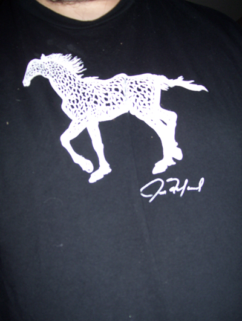

Gallery - Painting's
Samples of Joe Fafard's Work
Coyote 2, water color, 2009.

Turkey 1, water color, 2009.

A horse t-shirt, designed by Joe Fafard, 2009.

Home | Sculptures | Saskatchewan Artists
Copyright 2008 Joe Fafard. All images are the property of Joe Fafard. Coded in 2010 by Scott Mepham.
Updated in 2013 by Shambhavi Kalra.